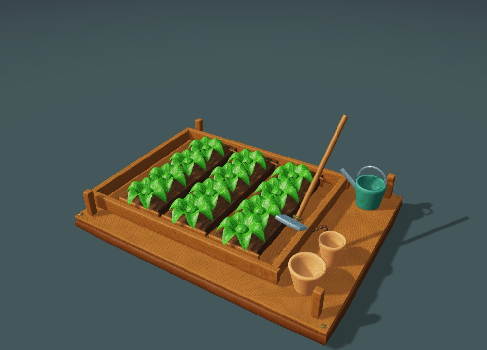
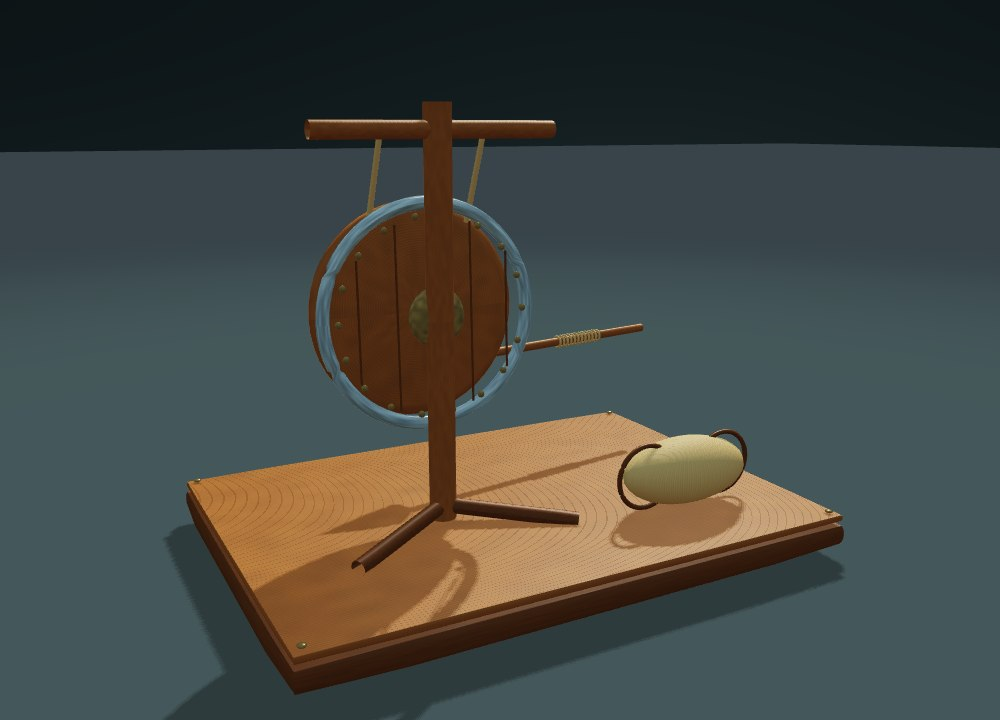
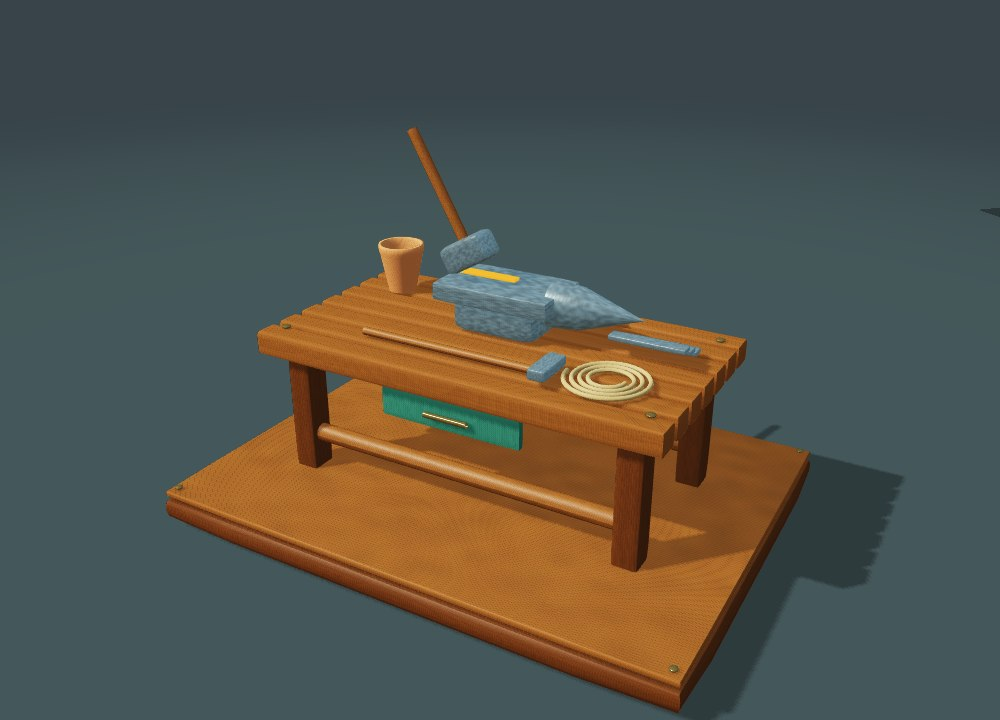
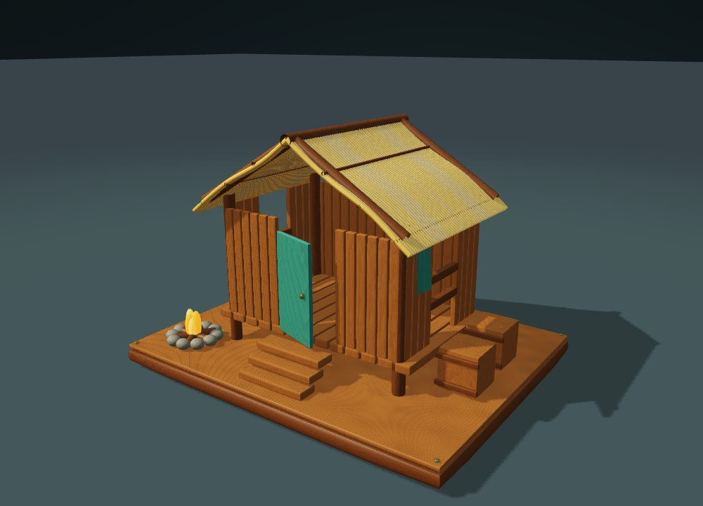
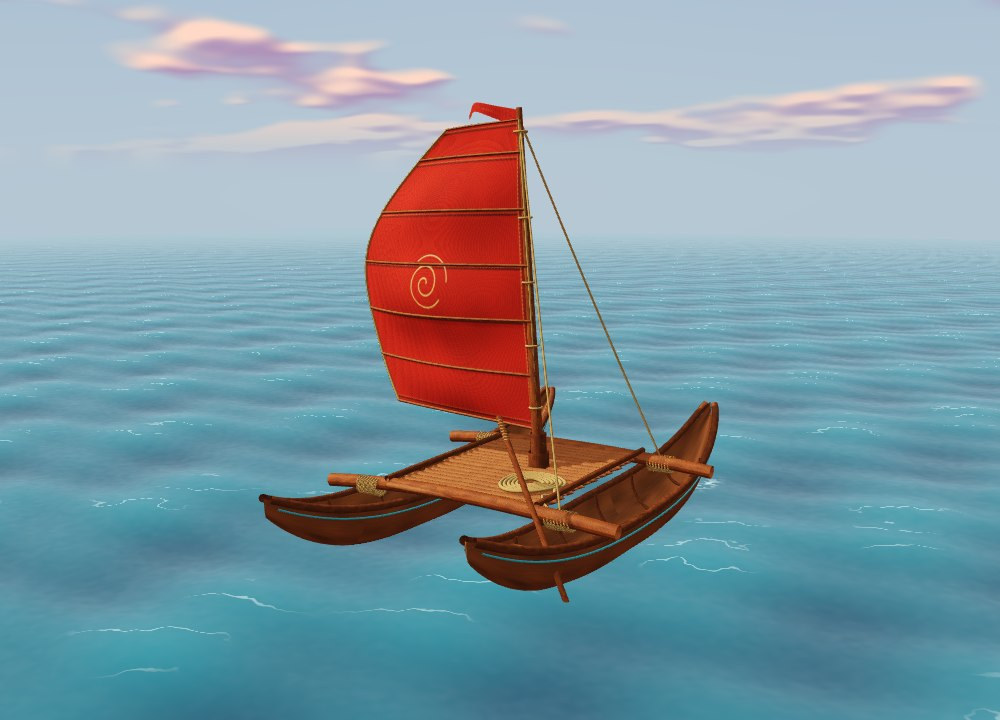

Systems taking shape.
Development notes cover movement, gathering, inventory, construction, crafting, wildlife and settlement systems.
OCEANBOND / AN INDEPENDENT ISLAND WORLD
An island to explore. A home to build.
Discover the ideas behind OceanBond, one living model at a time.
UNITY PROJECT · INTERACTIVE WEB SHOWCASE
01 / Cultivate
Turn a patch of island soil into a source of food. Plant crops, gather the harvest and support a growing settlement.
MODEL STUDY
A raised garden plot, moving leaves and a working hoe. An animated study of the farming loop.

Scroll here to explore the animated model02 / Defend
Gathering is only half of survival. Prepare your equipment, learn when to strike and protect what you have built beyond the safety of camp.
MODEL STUDY
A textured spear and a suspended practice shield, with a repeating thrust and recoil. A combat equipment study, not a playable encounter.

Scroll here to explore the animated model03 / Create
Resources become tools. Bring gathered materials to the workbench and prepare the equipment needed to build, survive and explore farther.
MODEL STUDY
An oak workbench, forged anvil, tools and a moving hammer. A close-up of making something useful.

Scroll here to explore the animated model04 / Belong
A shelter becomes a home. Add structures, establish production and make space for the people who arrive at your shore.
MODEL STUDY
A stilted timber hut with a thatched roof, a moving door and banner, supplies and a flickering campfire.

Scroll here to explore the animated model05 / Explore
The horizon is part of the adventure. Take to the water, discover island routes and connect your settlement to a wider world.
MODEL STUDY
The newer textured twin-hull raft: carved wood, rope lashings and a stitched red sail with embedded wind-and-wave motion.

Scroll here to explore the animated modelWHERE THE JOURNEY STANDS
OceanBond is an independent Unity project. These chapters present the game’s direction, not a finished release or a playable web build.
Development notes cover movement, gathering, inventory, construction, crafting, wildlife and settlement systems.
Persistence, animation, world presentation and the connections between gameplay systems remain areas for refinement and testing.
End-to-end playtests, performance checks, balancing and network validation are part of the work ahead. No release date is announced here.
About these visuals: the models are original web presentation assets, separate from the Unity project. Their motion illustrates gameplay ideas; it is not recorded gameplay or proof that a feature is release-ready. No private game assets or client data are exposed.
Let’s talk about Unity prototypes, interactive websites or a focused first milestone.